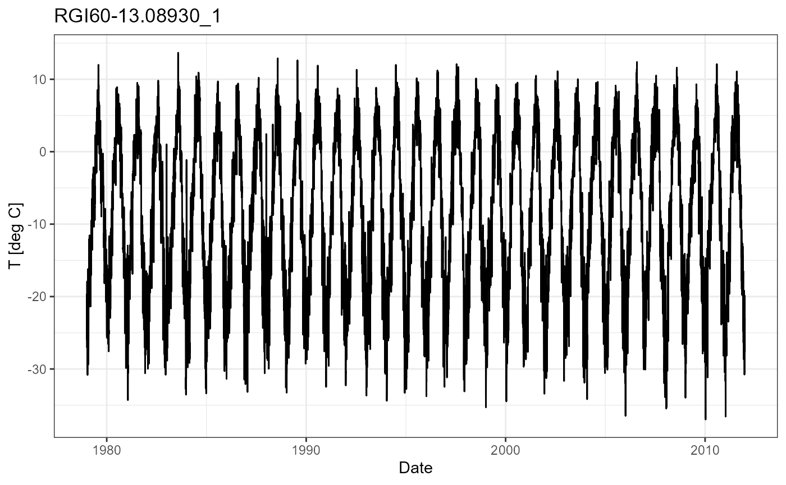
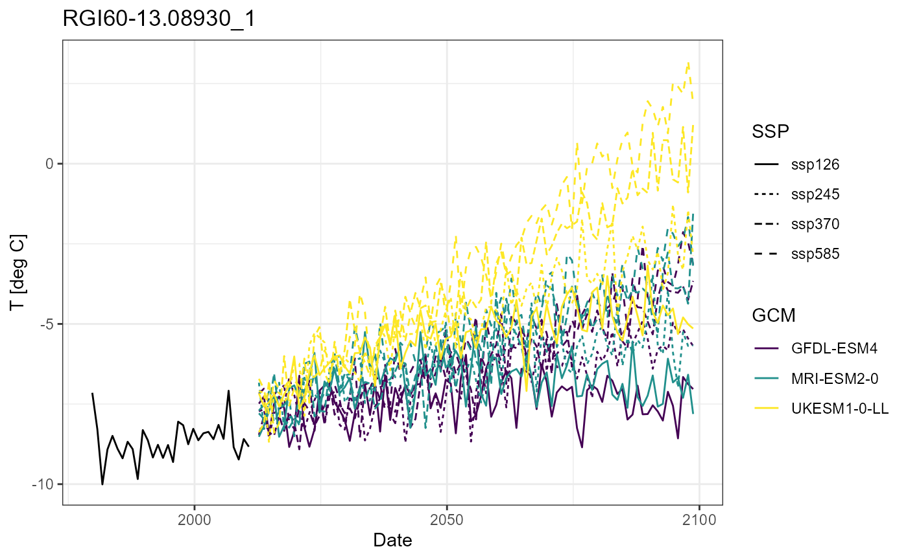
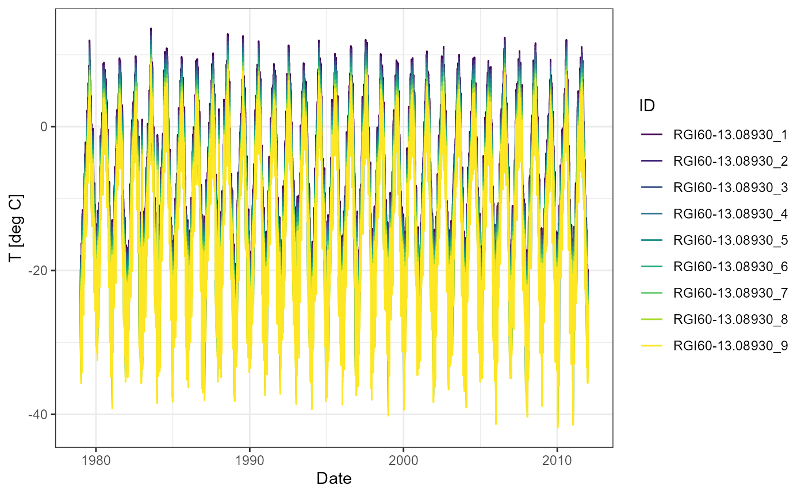
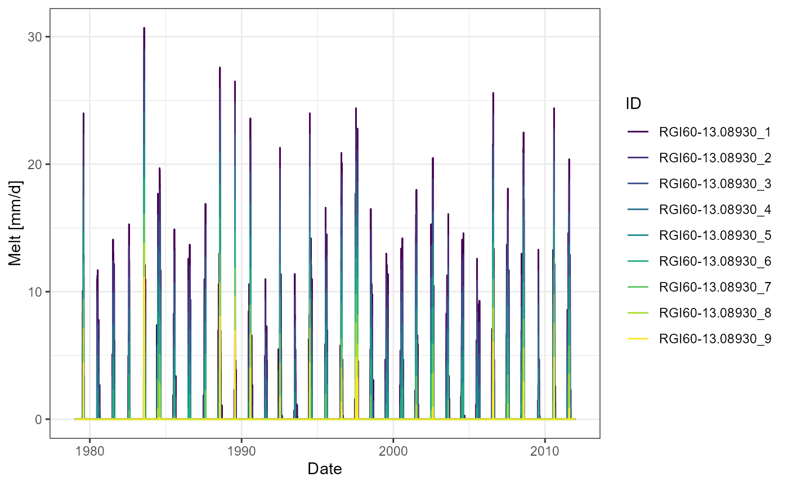

@hock_temperature_2003 describes several variants of the temperature index model for simulating glacier melt. The riversCentralAsia package implements the temperature index melt model described in (Hock 2003) in the function .
\[ M = \biggl\{ \begin{array}{l, l} 0, & T < T_{threshold} \\ MF \cdot \left( T - T_{threshold} \right), & T >= T_{threshold} \end{array} \]
where \(M\) is the glacier melt in \(mm/d\), \(T\) is the daily average temperature in \(^{\circ} C\). The two parameters \(MF\) and \(T_{\text{threshold}}\) refer to the melt factor and the threshold temperature above which glacier melt occurs and need to be calibrated. They have the units \(\frac{mm}{^{\circ} C \cdot d}\) and \(^{\circ} C\) respectively. Glacier melt is calculated in daily time steps.
We simplify the glacier mass balance to the following equation
\[ \Delta S = P-M = A_{imbal} \]
where the change of water storage (\(\Delta S\)) is equal to the precipitation (\(P\), assumed solid) minus the glacier melt (\(M\)). Typically melt excesses precipitation and we have negative imbalance ablation, indicating glacier storage loss. The glacier mass balance is calculated in annual time steps. We thereby refer to the hydrological year starting on October 1st of the previous year to take a full accumulation and ablation season into account.
As glaciers melt, their volume changes. This has to be taken into account for the long-term simulation of glacier discharge. The glacier volume develops according to the mass change. To determine the initial glacier volume we use the area of the geometry of the RGI v6.0 data set and multiply it with the average thickness of the glacier. Glaciers larger than 1km2 we sub-divide into elevation bands of 100m altitude to account for elevation dependent temperature forcing.
For annual time step \(t\), the evolution of the glacier volume is calculated as follows:
\[ A(t) = \text{glacierArea_RGIF}\bigl(V(t)\bigr) \]
\[ Q_{glacier}(t) = M(t) \cdot A(t) \]
\[ V(t+1) = V(t) + \Delta S = V(t) + \text{glacierImbalAbl}\bigl(Q_{\text{glacier}}(t)\bigr) \]
Note that the imbalance ablation (or \(\Delta S\)) is negative for glacier mass loss and positive for glacier accumulation.
\(Q_{\text{glacier}}\) can be calibrated against glacier discharge derived from the Miles & Hugonnet data sets.
The function is an empirical scaling function analogue the inverse of the scaling function derived by Erasov (1968) but based on the modern RGI v6.0 glacier geometries and the glacier thickness data set by Farinotti et al. (2019). The package implements volume-area and area-volume scaling functions based on both, Erashov and RGI-Farinotti data, allowing the estimation of glacier areas based on glacier volumes (\code{glacierArea_Erasov} and \code{glacierArea_RGIF}) and estimations of glacier volumes based on glacier areas (\code{glacierVolume_Erasov} and \code{glacierVolume_RGIF}).
The function is an empirical scaling function relating total glacier melt to imbalance ablation. It is derived from the glacier discharge data set by Miles et al. (2021).
There will be a separate Vignette to demonstrate how to prepare the forcing. For now, we provide you with the pre-processed forcing data and give you just a brief overview over the data source.
As meteorological data for high elevations in Central Asia is very scarce we use the CHELSA v2.1 data set. This is a global data set of forcing data for hydrolgical models based on ERA5 but corrected for biases and for high elevations. The daily CHELSA forcing has been cut to the Central Region by the originator of the data set, D. Karger, WSL.
#| fig.cap = "Daily temperature time series of a glacier. Data source: CHELSA."
#| out.width = 90%
hist_obs <- readRDS(file = "hist_obs_glacier_tas.rds")
# Plot the temperature time series for a given glacier/elevation band
glacier <- "RGI60-13.08930_1"
ggplot(hist_obs) +
geom_line(aes(date, get(glacier))) +
labs(x = "Date", y = "T [deg C]", title = glacier) +
theme_bw()
Future temperature development per glacier or elevation band is extracted from the 4 CMIP6 GCM models with highest priorities for the region () downloaded from COPERNICUS. We take 4 socioeconomic scenarios into account, covering 4 different emission scenarios. The temperatures of the climate models are bias corrected using the CHELSA data and a quantile mapping method.
#| fig.cap = "Annual historical (CHELSA) and future (CMIP6, Copernicus) temperature for a glacier. "
#| out.width = 90%
fut_sim <- readRDS(file = "fut_sim_glacier_tas_qmapped.RDS")
# Plot the temperature time series for a given glacier/elevation band
glacier <- "RGI60-13.08930_1"
# Extract the temperature for the selected glaciers for all GCMs and SSPs
scenarios <- names(fut_sim)
fut_temp <- NULL
for (scenario in scenarios) {
fut_temp <- rbind(fut_temp,
fut_sim[[scenario]] |>
dplyr::select(Date, all_of(glacier)) |>
mutate(Scenario = scenario))
}
fut_temp <- fut_temp |>
mutate(Hyear = hyear(Date)) |>
group_by(Hyear, Scenario) |>
summarise(Date = first(Date),
Temp = mean(get(glacier))) |>
separate(Scenario, into = c("GCM", "SSP"), sep = "_") |>
ungroup() |>
dplyr::filter(Hyear > min(Hyear) & Hyear < max(Hyear),
GCM != "IPSL-CM6A-LR")## `summarise()` has grouped output by 'Hyear'. You can override using the `.groups` argument.
# Plot annual data for better readability
ggplot() +
geom_line(data = hist_obs |>
mutate(Hyear = hyear(date)) |>
group_by(Hyear) |>
summarise(date = first(date),
Temp = mean(get(glacier))) |>
ungroup() |>
dplyr::filter(Hyear > min(Hyear) & Hyear < max(Hyear)),
aes(date, Temp)) +
geom_line(data = fut_temp, aes(Date, Temp, colour = GCM,
linetype = SSP)) +
scale_colour_viridis_d() +
labs(x = "Date", y = "T [deg C]", title = glacier) +
theme_bw()
We demonstrate the above described method with the data from the Atbashy basin.
# Load a shape file with elevation bands for the larger glaciers.
data("vignette_glacier_melt")
# Only keep the variables we need for this analysis
rgi_elbands <- rgi_elbands |>
dplyr::select(RGIId, Area, elvtn_b) |>
rename(Area_tot_glacier_km2 = Area) |>
mutate(ID = paste0(RGIId, "_", elvtn_b))
# Get mean elevation of each glacier/elevation band from DEM
rgi_elbands$z_masl <- exact_extract(dem, rgi_elbands, "mean", progress = FALSE)
# Update the glacier area within the basin boundaries
rgi_elbands$A_km2 <- as.numeric(st_area(rgi_elbands))*10^(-6)
glaciers <- unique(rgi_elbands$RGIId)
# Glacier thickness for elevation bands
rgi_elbands$thickness_m = exact_extract(glacier_thickness,
rgi_elbands, "mean", progress = FALSE)When simulating glacier melt, you would typically extract a temperature time series for each glacier/elevation band. In this vignette, we only have 1 time series \(T_0\) at mean glacier elevation \(z_0\) to save storage space. We therefore first have to generate synthetic temperature time series for each glaciers/elevation band \(i\) using a typical temperature lapse rate \(r_{\text{lapse}}\) for mountainous regions as follows:
\[ \frac{\Delta T}{\Delta z} = \frac{T_0-T_i}{z_0-z_i} = r_{\text{lapse}} = -\frac{6.5 ^{\circ}C}{1000 m} \]
\[ T_{i} = T_{0} + r_{\text{lapse}} \cdot (z_{0} - z_{i}) \]
#| fig.cap = "Synthetic forcing for the elevation bands of a glacier. "
#| out.width = 90%
glacier <- "RGI60-13.08930_1"
z_glacier <- rgi_elbands$z_masl[rgi_elbands$ID == glacier]
temperature_laps_rate <- -6.5/1000 # deg K / 1000 m
# Generate synthetic temperature time series for each glacier & elevation band in
# the basin.
z_glaciers <- rgi_elbands |>
st_drop_geometry() |>
dplyr::select(ID, z_masl) |>
pivot_wider(names_from = ID, values_from = z_masl)
hrus <- rgi_elbands$ID
t_glaciers <- as.matrix(hist_obs)
colnames(t_glaciers) <- NULL
for (hru in c(2:length(hrus))) {
t_glaciers <- cbind(t_glaciers, as.matrix(as.numeric(t_glaciers[, 2])) +
temperature_laps_rate *
(as.numeric(z_glaciers[hru]) - as.numeric(z_glaciers[1])))
}
colnames(t_glaciers) <- c("date", hrus)
t_glaciers <- as_tibble(t_glaciers)
t_glaciers$date <- as_date(t_glaciers$date)
t_glaciers <- t_glaciers |>
mutate(across(starts_with("RGI"), ~as.numeric(.x)))
ggplot(t_glaciers[, 1:10] |>
pivot_longer(-date, names_to = "ID", values_to = "Temp")) +
geom_line(aes(date, Temp, colour = ID)) +
scale_colour_viridis_d() +
labs(x = "Date", y = "T [deg C]") +
theme_bw()
#| fig.cap = "Daily glacier melt per elevation band."
#| out.width = 90%
MF = 3
threshold_temperature = -3
Area <- rgi_elbands |>
dplyr::select(ID, A_km2) |>
pivot_wider(names_from = ID, values_from = A_km2)
melt <- glacierMelt_TI(temperature = t_glaciers |> dplyr::select(-date),
MF = MF,
threshold_temperature = threshold_temperature)
melt <- as_tibble(melt) |>
mutate(date = t_glaciers$date) |>
relocate(date, .before = where(is.numeric))
ggplot(melt[, 1:10] |>
pivot_longer(-date, names_to = "ID", values_to = "Melt")) +
geom_line(aes(date, Melt, colour = ID)) +
scale_colour_viridis_d() +
labs(x = "Date", y = "Melt [mm/d]") +
theme_bw()